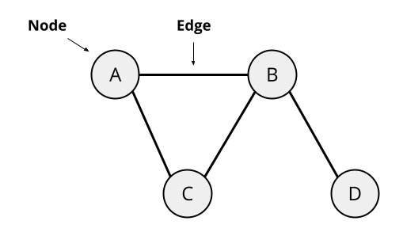
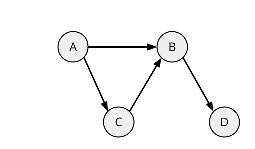

In 2016, Facebook calculated that the average connection length between any two users was 3.57. This means that, out of 1.59 billion users of Facebook, any two random users could be connected through Facebook friends by an average of 3.57 connections. The Oracle of Bacon is another demonstration how close-knit human networks tend to be. The website allows you to see how many shared movie credits it takes to link any actor to Kevin Bacon, with the average link distance being 3.164.
This idea that everyone is socially connected by a short path length is often known as “six degrees of separation", originating from the idea that everyone could be connected to each other through six or fewer intermediaries. This theory was famously tested in an experiment conducted by Harvard professor Stanley Milgram. In the experiment, hundreds of packages were sent out to participants in Kansas and Nebraska. The participants were told a person to eventually send their package to, but they were only allowed to send it to them via personal contacts. Although many of the packages never reached their target because of people refusing to send the packages along, those that did reached the target in an average of 5 to 6 links.
This article will give a brief overview of graph and network theory, as it applies social networks. I will discuss how networks are represented mathematically and computationally, how different networks vary in behavior, and how computers calculate the shortest distance in a graph.
Networks are typically represented by a construct known as a graph. A graph contains multiple nodes, or data-points which can have connections to other nodes on the graph to form connections. These connections are known in graph theory as edges.

In the above diagram, there are four nodes (A, B, C, and D), and four edges. Nodes A, B, and C have two edges, and node D has one. Undirected graphs, like the one above, are graphs that have no “direction" or “order". In the example given above, node A can “lead" to node B, and node B can lead to node A.
In directed graphs, however, edges have direction.

In the above example, A leads to both B and C, but B and C do not lead to A. Because of the direction of the edges, this graph is said to be directed.
Social networks, like those in Facebook or The Oracle of Bacon, are typically undirected graphs, because any two adjacent nodes (people, in this case), have the same relationship to each other. Unlike a directed graph, people don’t have “one way connections" to others. Examples of directed graphs include food webs and general hierarchies, where one node leads to another.
In network theory, there are various different categories used to describe networks. Each different type of network as different properties, and applies to different real-world scenarios.
A regular network is a network where every node has an exactly equal number of connections to other nodes. Regular, or almost regular networks are rare in social networks, especially in larger ones. Regular networks typically occur in pre-designed, rather than “natural" networks. For example, a 100 × 100 lattice grid in a city made up of 1000 intersections, where every intersection is a node and every street is an edge is a regular network, because each node has exactly 4 connections. Hierarchical networks, such as symmetrical trees, are regular networks, as every node has an equal number of connections. Regular networks tend to have very high degrees of separation, because there are no connections between any node and another node far from it. In the previous traffic grid example, the degrees of separation from one intersection at one end of the traffic grid to another intersection at the other end would be 200.
A random network is a network where every network has a random number of connections to random other nodes. Because random networks rely on people forming connections completely randomly, they generally don’t apply to human social networks. They tend to have the lowest degrees of separation, because it is easy for one node on the graph to be connected to another node far from it, resulting in distance from both sides of the graph reducing greatly.
A small-world network is a network where connections are largely clustered, except for the occasional outlier. Small-world networks are the most representative of social networks, because they replicate both local networks (networks whose nodes connect mostly or entirely to nearby nodes), and occasional contacts that connect them to completely different local networks. Networks like these often have relatively low degrees of separation, because the random connections across the network allow decrease the distance from one side to the other. However, their clustering behavior gives them higher degrees of separation than random networks.
A common way to find the minimum distance between two nodes on a graph is to begin traversing every node on the graph to find the shortest path. This can be done by going through every node linked to the starting node, and checking to see if they’re the end node. If they are, we can return 1, because we know that the distance to them is 1. If the end node is not immediately accessible, we can go through each relative node and recursively call the distance function starting from them. We then add 1 to the result of this recursive call, and return that. This final value signifies the distance from the start node to the end node.
To represent each node, we will write a class called
Node which contains only the “name" of the node. Then, we
write the class UndirectedGraph, which stores all of the
nodes and edges in an undirected graph. This class has four (although
really three) functions: a function to add a node, a function to add an
edge, a function to calculate the distance between two nodes, and a
driver function to call the aforementioned function.
Here is a demonstration of this in pseudocode:
CLASS Node(name):
FUNCTION print()
return name
CLASS UndirectedGraph():
LET nodes = []
LET edges = {}
FUNCTION add_node(node)
APPEND node TO nodes
FUNCTION add_edge(node1, node2)
if node1 IS NOT IN edges:
edges[node1] = []
if node2 IS NOT IN edges:
edges[node2] = []
APPEND node2 TO edges[node1]
APPEND node1 TO edges[node2]
FUNCTION distance_helper(start, end, visited)
IF start == end:
return 0
FOR EACH relative IN edges[start]:
IF relative IS NOT IN visited:
APPEND relative TO visited
LET dist = distance_helper(relative, end, visited)
IF dist IS NOT None:
return dist + 1
return None
FUNCTION distance(self, start, end)
LET visited = []
return self.distance_helper(start, end, visited)To generate the undirected network featured above, we can run the following, which generates four nodes with the edges shown above.
A = NEW Node("A")
graph.add_node(A)
B = NEW Node("B")
graph.add_node(B)
C = NEW Node("C")
graph.add_node(C)
D = NEW Node("D")
graph.add_node(D)
graph.add_edge(A, B)
graph.add_edge(A, C)
graph.add_edge(B, D)
graph.add_edge(B, C)To calculate the distance from A to D on the graph (2), we can run
PRINT graph.distance(A, D), which runs the algorithm
described in section 4.1, recursively searching through each relative of
a node until it finds the end node.
Social networks appears everywhere in our society, and being able to represent and classify these networks can give us a lot of insight into how we interact with each other. Knowing how everyone can connect themselves to everyone else through only six steps is not only an interesting fact, but a quantitative measurement of how connected our world has become. As social media continues to become more influential in our lives, understanding networks will only become more and more important, which is why network theory will remain one of the most practical and relevant fields in the world.
8 Bryner, Jeanna. “Six Degrees of Separation: Fact or Fiction?” LiveScience, Purch, 12 Dec. 2012, https://www.livescience.com/32340-six-degrees-of-separation-fact-or-fiction.html.
Frieze, Alan, and Michal Karonski. “Introduction to Random Graphs - CMU.” Introduction to Random Graphs, Carnegie Mellon University, 21 Dec. 2021, https://www.math.cmu.edu/ af1p/BOOK.pdf.
“Graph.” Directed and Undirected Graphs - MATLAB & Simulink, https://www.mathworks.com/help/matlab/math/directed-and-undirected-graphs.html.
“The Oracle of Bacon.” The Oracle of Bacon, https://oracleofbacon.org/.
Patterns. “Good News !!” Random Networks – Patterns In Nature, an Online Book, http://www.patternsinnature.org/Book/RandomNetworks.html.
“The Science behind Six Degrees.” Harvard Business Review, 1 Aug. 2014, https://hbr.org/2003/02/the-science-behind-six-degrees.
“Small-World Network.” Wikipedia, Wikimedia Foundation, 9 Dec. 2021, https://en.wikipedia.org/wiki/Small-world_network.
“Three and a Half Degrees of Separation - Meta Research.” Meta Research, Facebook, 4 Feb. 2016, https://research.facebook.com/blog/2016/02/three-and-a-half-degrees-of-separation/.